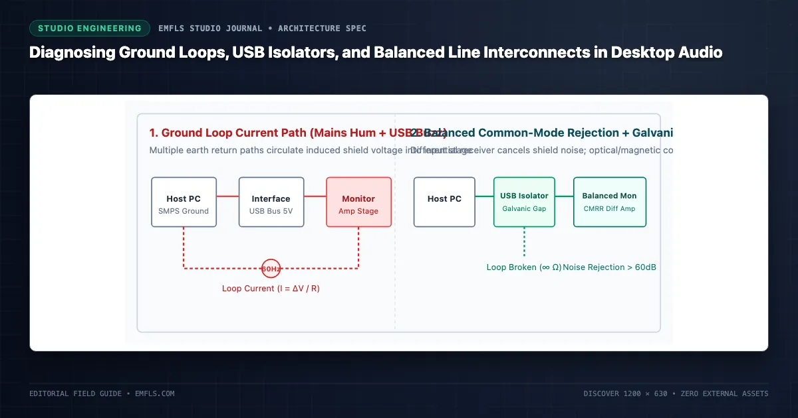
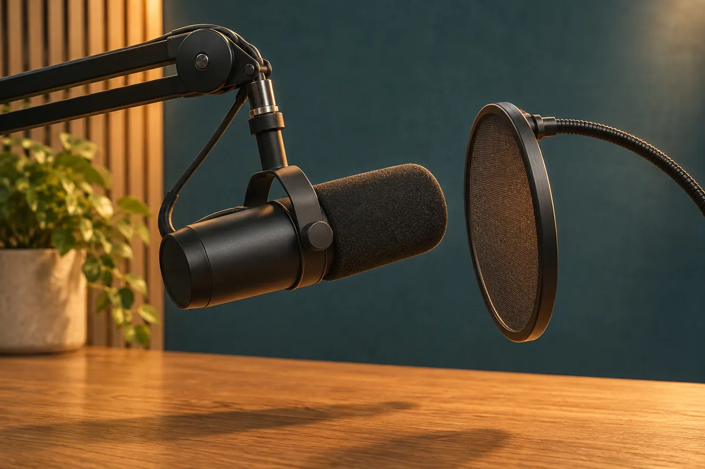
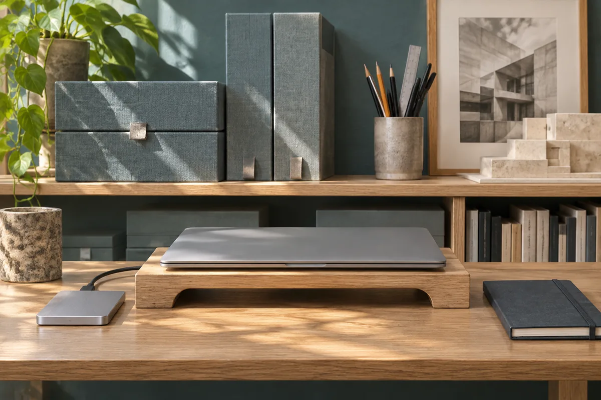
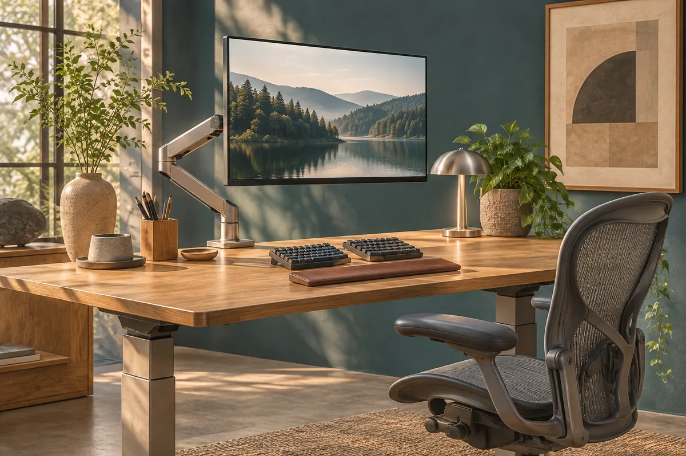

Studio Workflow · November 24, 2026 · 10 min read
Unwanted buzz and low-frequency hum in desktop studio monitors rarely stem from defective audio interfaces. Instead, multiple interconnected earth ground paths create closed loops that turn cable shields into induction antennas for mains current and high-frequency USB data packets. Converting unbalanced cables to balanced TRS interconnects and inserting galvanic digital isolation eliminate ground hum at the physical circuit level.

Studio Workflow · November 19, 2026 · 7 min read
A small desk room can send a speaker reflection back to your ears within a few milliseconds, ring between bare walls, and bounce your voice off the desktop into the mic. Mark each path, calculate a panel gap that fits the room, then compare reflection levels in decibels and record dry voice takes to hear what changed.

Studio Workflow · November 19, 2026 · 7 min read
A folder full of final-v2 files leaves the next editor guessing which source and edit produced a delivery. Give each asset a date-first ID, protect the master, and put each export under its working revision. On a 240-file intake, you can verify zero duplicate destination paths and trace a delivered JPEG to its master in under two minutes.

Studio Workflow · November 19, 2026 · 7 min read
A bright screen against a dark wall makes your eyes repeatedly adapt, while light reflected off the panel can hide shadow detail. Set SDR screen white to 100–120 cd/m², then measure the neutral D65 wall glow at about one tenth of that value. Check a near-black pattern from your editing seat before making exposure or black-point decisions.

Studio Workflow · November 19, 2026 · 7 min read
A close cardioid vocal can gain useful weight on held notes and still lose a take to one hard P. Record the same phrase on a dynamic and a condenser from 10 to 35 cm, then match playback levels and measure vowel bass and plosive peaks separately. The aim is a placement you can repeat that keeps the vocal full and the room in check.

Studio Workflow · November 19, 2026 · 8 min read
A project archive can survive a move and still lose the trail from a decision to its supporting photograph. Build a folder that keeps that trail intact with six frontmatter fields, sortable dates, relative image links, and a plain-text index. Then copy the folder and spend ten minutes checking three notes, every path they cite, and the recorded decision behind one measurement.

Studio Workflow · November 19, 2026 · 7 min read
A chair can feel right until the desk lifts your shoulders, the keyboard bends your wrists, or the screen makes you crane your neck. Use a tape measure to set loaded seat height and knee clearance, check elbow and wrist angles while typing, and align the monitor's top bezel with seated eye level. Record the measurements so you can restore the setup after someone moves it.